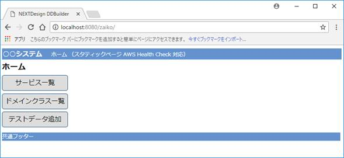

開発の流れ
DDBuilderを使った実践の流れを示します。
この例のドメインは、簡単な在庫管理業務とします。
倉庫、製品、在庫、在庫管理サービスといったドメインモデルを作成する流れを示します。
この節は、次の10ステップで順に説明します。
- [1/10] DDBuilder の起動
- [2/10] 基本情報の設定
- [3/10] 初回の生成
- [4/10] 初回のWebアプリケーションの実行確認
- [5/10] ドメインモデルを追加
- [6/10] Webアプリケーションに反映
- [7/10] Eclipse プロジェクトをリフレッシュ
- [8/10] 再度 Webアプリケーションを動かしてテスト
- [9/10] ドメインモデルをさらに追加
- [10/10] ドメインモデルの実装コード例（例：StockService, Warehouse, Stock）
[1/10] DDBuilder の起動
(1) 事前準備として、DDBuilder 圧縮ファイル (jp-co-nextdesign-ddbuilder.zip) をダウンロードします。 [ダウンロードページへ]
(2) DDBuilder 圧縮ファイルを適当な場所に解凍します。
(3) 解凍後フォルダ (jp-co-nextdesign-ddbuilder) の直下の startDdbuilder.bat を起動します。
(4) 起動すると下図の画面が表示されます。
※ なお、DDBuilder は Java で作成されたスタンドアロンアプリケーションです。Eclipseのプラグインではありません。Eclipseとは関係なく独立して動作します。
[2/10] 基本情報の設定
起動したら、Webアプリケーションの作成場所やアプリケーション名などの基本情報を入力します。
ここで設定した基本情報は、生成される Java Web アプリケーションの画面ラベル等にも反映されます。
より詳細な設定は、「他の設定」ボタンを押してから設定してください。
下図は入力例です。
[3/10] 初回の生成
基本情報を入力し、作成／更新ボタンを押下するとWebアプリケーションの基本形が作成されます。
この時点ではドメインモデルはひとつも定義されていませんので、生成されたWebアプリケーションは最小限の画面 (トップ画面など) を含むだけです。
次に、生成されたWebアプリケーションを、Eclipseにインポートします。
インポートしたら、Eclipseから、ドメインモデルを Java で実装したり、Web アプリケーションとしてデバッグ実行して、ドメインモデルを検証します。
※Webアプリケーションは、インポート可能なEclipseプロジェクトとして生成されています。
※ 必須ではありませんが、上図のように表示したい場合は、
右上の四角印の辺りで「Java EE」を選択します。
もし、Java EE が無い場合は、メニューバー → ウィンドウ → ビューの表示 → プロジェクト・エクスプローラでビューを追加してください。
画面左のプロジェクト・エクスプローラの表示形式を上図と同じようにするためには、
上の丸印の所の「▽」をクリックして、次図のようにパッケージ・プレゼンテーションを「階層」にします。
※ Eclipse と DDBuilder は、ともに起動したままでも構いません。一度終了してから、必要なときに再起動しても構いません。
※ 再起動した場合も、前回入力されたDDBuilder画面の基本情報は維持されています。
[4/10] 初回のWebアプリケーションの実行確認
インポートが完了すると、上図のように「プロジェクトエクスプローラ」ビューに表示されます。
確認のために、Eclipseで Web アプリケーションを実行してみます。
この時点では、ドメインモデルは１つもありませんが、基本的な画面遷移の動作確認はできます。
下図はEclipse内で実行した時の例です。
上図はEclipse内蔵のブラウザで表示された状態です。
Eclipse外のブラウザからもアクセスしてテストできます。
下図はChromeからアクセスした例です。例：http://localhost:8080/zaiko/
ここまでで、Webアプリケーションの基本動作ができました。(ドメインモデルが無い空のアプリケーション)
この後は、ドメインの分析、ドメインモデルの抽出、設計、実装、検証する作業の繰り返しが始まります。
つまり、初回のイテレーションの開始です。
一気にドメイン全体をカバーしようとするのではなく、１週間程度で行える範囲や優先度の高いユースケースが通る範囲などをイテレーションのゴールとして設定します。(１週間が妥当かどうかは要検討です)
期間の目安や、ユースケースの優先度などはプロジェクトによって違ってくるでしょう。
反復型開発プロセスやアジャイルなどの手法解説を参考にしてください。
[5/10] ドメインモデルを追加
まず、もっとも簡単な例として、下図のProductオブジェクトを１つだけ作成してみます。
従って、イテレーションのゴールは、以下の製品Productクラスの初版を実装し、Webアプリケーションの形で振る舞いを検証することです。
サンプル クラス図

サンプル コード
/**
* 製品
*/
@Entity <------------- JPAアノテーション
public class Product extends DdBaseEntity { <------------- DDBuilderエンティティ基底クラス
private static final long serialVersionUID = 1L;
/**
* 製品名
*/
private String name;
/**
* コンストラクタ
*/
public Product(){
super();
this.name = "";
}
public String getName() {
return name;
}
public void setName(String name) {
this.name = name;
}
}
実装作業は、下図のように、EclipseでProductクラスを実装します。
domainパッケージの直下にProduct.javaを追加します。サブパッケージを追加することもできます。
[6/10] Webアプリケーションに反映
これで、Productクラスは追加できました。
しかしまだ、Productクラスのインスタンスを登録したり、表示したりするためのビュー層 (ユーザインタフェース層) や永続化層 (インフラストラクチャ層) はありません。
これらは、DDBuilderが自動生成します。
そのために、DDBuilderでWebアプリケーションを更新します。
DDBuilderはProduct.javaファイルを読み込み、ビュー層のクラスなどを追加します。
[7/10] Eclipse プロジェクトをリフレッシュ
作成／更新ボタンを押下し、完了ダイアログが表示されたら、Webアプリケーションの中に必要なjavaファイルが追加されています。
しかし、Eclipseは、追加されたファイルを検知していません。
そのために必ず、Eclipse側でプロジェクトをリフレッシュしてください。(忘れがちです)
[8/10] 再度 Webアプリケーションを動かしてテスト
リフレッシュしたら、再度Webアプリケーションを起動してテストします。
下図はChromeからアクセスした例です。
[ アプリケーショントップ画面 ]
ここで、ドメインクラス一覧ボタンをクリックすると次画面に遷移します。
[ ドメインクラス一覧画面 ]
次に、製品Productリンクをクリックすると次画面に遷移します。
[ ドメインクラス別のインスタンス一覧・新規作成画面 ]
次に、新規作成リンクをクリックすると次画面に遷移します。
[ ドメインクラス別の新規登録画面 ]
次に、製品名を入力し保存ボタンを押下すると、Productインスタンスが永続化され、次画面に遷移します。
1件登録され、一覧に追加されています。
次に、編集リンクをクリックすると次画面に遷移します。

次に、製品名を変更すると次画面に遷移します。
次に、保存すると次画面に遷移します。
[9/10] ドメインモデルをさらに追加
ここまではProductクラスだけでしたが、下図のようにドメインモデルに1つのサービスと2つのエンティティを追加します。
値オブジェクト (バリューオブジェクト) はこの例では登場しません。

Productを追加した時と同様の手順で、Webアプリケーションを更新し、テスト実行します。
[ アプリケーショントップ画面 ]

ドメインクラス一覧ボタン → 製品Productリンクをクリックします。
なお、ここでは説明を省略しますが、以降の説明の中では、下図のようなテストデータが作成済みとします。
テストデータの作成については ユーザーガイド(PDF)を参照してください。
ドメインクラス一覧ボタンを押下します。
[ ドメインクラス一覧画面 ]
製品 Productリンクをクリックします。
[ ドメインクラス別インスタンス一覧画面 ]
例として、2行目の編集リンクをクリックします。
[ ドメインクラス別編集画面 ] (製品(1)---(*)在庫)
編集して保存するか、キャンセルで戻ります。
次に、サービスメソッドを実行してみます。
このサービスは、ある倉庫から別の倉庫に在庫を移動させる業務を実現します。
サービス一覧またはホーム → サービス一覧で下図の画面が表示されます。
[ サービスメソッド一覧画面 ]
実行リンクをクリックします。
下図の画面が表示されたら、このサービスメソッドに渡す引数を指定します。
from移動元倉庫：選択ボタンを押下します。
[ サービスメソッド実行画面 (引数設定画面) ]
例として「福岡センター」を選択します。
仮決定ボタンを押下します。
同様に移動先の倉庫と移動する製品と数量を指定します。

サービス実行を押下すると、下図の完了画面が表示されます。
倉庫間移動メソッドの詳細は実装していませんので、戻り値としてtruetrueが表示されています。
[ サービスメソッド実行結果画面 ]

[10/10] ドメインモデルの実装コード例（例：StockService, Warehouse, Stock）
サンプル コードには次の4つのクラスが含まれています。
(1) 製品 @Entity
public class Product extends DdBaseEntity
(2) 在庫 @Entity
public class Stock extends DdBaseEntity
(3) 倉庫 @Entity
public class Warehouse extends DdBaseEntity
(4) 在庫管理サービス
public class StockService extends DdBaseService
サンプルコード
package jp.co.nextdesign.domain;
import java.util.ArrayList;
import java.util.List;
import javax.persistence.CascadeType;
import javax.persistence.Entity;
import javax.persistence.OneToMany;
import javax.persistence.Transient;
import jp.co.nextdesign.domain.ddb.DdBaseEntity;
/**
* 製品
*/
@Entity
public class Product extends DdBaseEntity {
private static final long serialVersionUID = 1L;
/** 製品名 */
private String name;
/** 在庫 */
@OneToMany(mappedBy="product", cascade=CascadeType.ALL, orphanRemoval=true)
private List<Stock> stockList = new ArrayList<Stock>();
/** コンストラクタ */
public Product(){
super();
this.name = "";
}
//OneToManyで双方向関連を維持するためのコードを
//含むgetStockList(),setStockList(List<Stock> stockList)の例
@Transient
private ArrayList<Stock> latestStockList = new ArrayList<Stock>();
public List<Stock> getStockList() {
return this.stockList;
}
public void setStockList(List<Stock> stockList) {
for(Stock newStock : stockList){
if (!latestStockList.contains(newStock)){
newStock.setProduct(this);
}
}
for(Stock oldStock : latestStockList){
if (!stockList.contains(oldStock)){
oldStock.setProduct(null);
}
}
this.stockList = stockList;
latestStockList = new ArrayList<Stock>(this.stockList);
}
public String getName() {
return name;
}
public void setName(String name) {
this.name = name;
}
/** DDB一覧表示用タイトル */
@Override
public String getDDBEntityTitle(){
return "製品名：" + this.getName();
}
}
package jp.co.nextdesign.domain;
import java.util.Calendar;
import java.util.Date;
import javax.persistence.Entity;
import javax.persistence.ManyToOne;
import jp.co.nextdesign.domain.ddb.DdBaseEntity;
/**
* 在庫
*/
@Entity
public class Stock extends DdBaseEntity {
private static final long serialVersionUID = 1L;
/** 数量 */
private Integer quantity;
/** 製品 */
@ManyToOne
private Product product;
/** 倉庫 */
@ManyToOne
private Warehouse warehouse;
/** コンストラクタ */
public Stock(){
super();
this.quantity = 0;
}
/**
* 次月の入庫予定日を応答する
* @return 次月の入庫予定日
*/
public Date getNextMonthWarehousingDate(){
Date result = Calendar.getInstance().getTime();
//何らかの実装
return result;
}
/** DDB一覧表示用タイトル */
@Override
public String getDDBEntityTitle(){
String result = "製品名=";
result += this.getProduct() != null ? this.getProduct().getName() : "";
result += " 倉庫名=";
result += this.getWarehouse() != null ? this.getWarehouse().getName() : "";
result += " 数量=" + this.getQuantity();
return result;
}
public Integer getQuantity() {
return quantity;
}
public void setQuantity(Integer quantity) {
this.quantity = quantity;
}
public Product getProduct() {
return product;
}
public void setProduct(Product product) {
this.product = product;
}
public Warehouse getWarehouse() {
return warehouse;
}
public void setWarehouse(Warehouse warehouse) {
this.warehouse = warehouse;
}
}
package jp.co.nextdesign.domain;
import java.util.ArrayList;
import java.util.List;
import javax.persistence.CascadeType;
import javax.persistence.Entity;
import javax.persistence.OneToMany;
import javax.persistence.Transient;
import jp.co.nextdesign.domain.ddb.DdBaseEntity;
/**
* 倉庫
*/
@Entity
public class Warehouse extends DdBaseEntity {
private static final long serialVersionUID = 1L;
/** 倉庫名 */
private String name;
/** 在庫リスト */
@OneToMany(mappedBy="warehouse", cascade=CascadeType.ALL, orphanRemoval=true)
private List<Stock> stockList = new ArrayList<Stock>();
/** コンストラクタ */
public Warehouse(){
super();
this.name = "";
}
/** 製品在庫を追加する */
public boolean addStock(Product product, int quantity){
//処理（この例では省略）
return true;
}
/** 製品在庫を削減する */
public boolean removeStock(Product product, int quantity){
//処理（この例では省略）
return true;
}
//OneToManyで双方向関連を維持するためのコードを
//含むgetStockList(),setStockList(List<Stock> stockList)の例
@Transient
private ArrayList<Stock> latestStockList = new ArrayList<Stock>();
public List<Stock> getStockList() {
return this.stockList;
}
public void setStockList(List<Stock> stockList) {
for(Stock newStock : stockList){
if (!latestStockList.contains(newStock)){
newStock.setWarehouse(this);
}
}
for(Stock oldStock : latestStockList){
if (!stockList.contains(oldStock)){
oldStock.setWarehouse(null);
}
}
this.stockList = stockList;
latestStockList = new ArrayList<Stock>(this.stockList);
}
public String getName() {
return name;
}
public void setName(String name) {
this.name = name;
}
/** DDB一覧表示用タイトル */
@Override
public String getDDBEntityTitle(){
return "倉庫名：" + this.getName();
}
}
package jp.co.nextdesign.service;
import jp.co.nextdesign.domain.Product;
import jp.co.nextdesign.domain.Warehouse;
import jp.co.nextdesign.service.ddb.DdBaseService;
/**
* 在庫管理サービス
*/
public class StockService extends DdBaseService {
/**
* 倉庫間移動
* @param from 移動元倉庫
* @param to 移動先倉庫
* @param product 移動する商品
* @param quantity 移動する数量
* @return
*/
public Boolean transferStock(Warehouse from, Warehouse to, Product product, Integer quantity) {
boolean result = false;
try {
startService(); //サービス初期化処理
begin(); //トランザクション開始
// 倉庫間移動処理
if (from.removeStock(product, quantity)){
if (to.addStock(product, quantity)){
result = true;
}
}
if (result){
commit(); //トランザクションcommit
} else {
rollback(); //トランザクションrollback
}
} catch (Exception e) {
rollback();
} finally {
endService(); //サービス終了処理
}
return result;
}
}